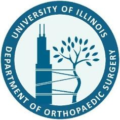

Orthopaedic surgery residency, medical school, and a bioengineering foundation in biomechanics.

University of Illinois at Chicago — Department of Orthopaedic Surgery
2023 – 2028 (Class of 2028)
OITE Exam: 94th Percentile • Appointed Class Representative • Illinois State Resident Representative (NOLC)
Appointed Chief Resident 2027–2028The Ohio State University College of Medicine
2019 – 2023
Cum Laude • Alpha Omega Alpha Honor Society • Landacre Research Honor Society
University of Pittsburgh — Swanson School of Engineering
2014 – 2018
Summa cum Laude • Concentration: Biomechanics & Biodynamics • Minor: Chemistry • Outstanding Biomechanics Student of the Year • Honors College Scholar
Member
Resident and candidate memberships held during orthopaedic surgery residency.
∗ Resident member